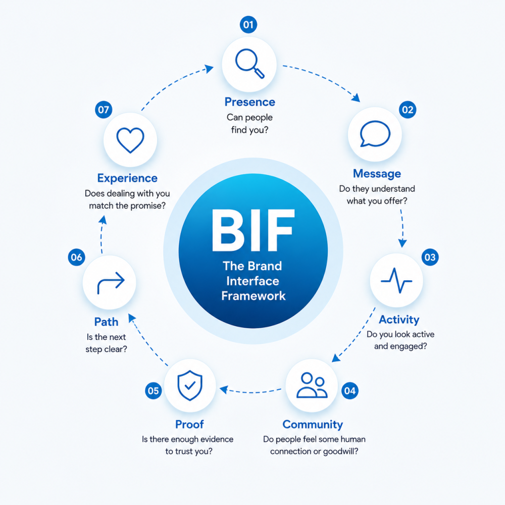

I renamed something.
Again.
I know. I know.
In my last YouTube video, I introduced a concept I called the Digital Brand System. It worked well enough at the time. Got the idea across. Did its job. Passed the vibe check (people still say that right?). Mostly.
To be fair to past me, I called it "digital" on purpose. Digital is my main area of focus. Websites, social media, online presence, search, messaging, content... that is the world I spend most of my time thinking about and working in. So narrowing the idea to digital made sense for the video.
But then I tried stress-testing the concept. I mean really putting it through the wringer.
And the more I worked through the framework, the more obvious it became that the idea was bigger than the digital layer.
Also, "Digital Brand System" started to feel too clean in all the wrong ways. Like a section title in a corporate brochure. The kind of phrase you skim past because your brain simply registered it as more homogenous verbiage.
It had no grip.
The "digital" part showcased my lane well, but it needlessly amputated the full potential of the concept.
The Old Name Was Close, but Not Close Enough
Something you should probably know about me if you do not already: I am deeply, possibly pathologically, attached to analogies, illustrations, and extended metaphors.
I cannot help it.
If I can't picture an idea, I do not fully trust that I understand it. And if I can't explain it through a picture in someone’s head, I do not trust that I am explaining it well.
That has always been how my brain works. Give me a concept and I immediately start looking for the picture behind it.
So when I am building a framework, I am not only looking for the right words. I am looking for the metaphor that makes the whole thing click.
Digital Brand System does not give me that. It sounds accurate enough, especially for the digital work I was talking about at the time, but the more I fleshed it out, the drier it felt. There was nowhere for the idea to go.
Around the same time, I came across Katelyn Bourgoin's concept of the Ownable Idea. My understanding of it is essentially that your best thinking should have a recognisable lens, a name, and a shape. Something people can readily remember and associate with you.
That hit me harder than expected, because it named the exact thing that felt missing.
"Digital Brand System" vaguely describes the concept, but it really does not feel like mine. Anyone could slap that phrase on a slide deck, and no one would bat an eye. Honestly, many probably have.
So I went back to the drawing board.
The Tech Detour, That Wasn't a Detour
Over the last few months, I’ve been spending a lot more time exploring programming languages and web development amidst this new flood of AI tools.
What started out as what some would call "vibecoding" slowly evolved into something closer to the real thing, mostly because my frustration with its limits pushed me to learn how to do more of it myself.
And weirdly, it ended up pulling together a lot of the things I had already been doing for years.
My background has always sat somewhere between digital media production, marketing, and tech. I’ve spent years thinking about visuals, storytelling, audience behaviour, communication, branding, content, and how people interact with businesses online.
So getting deeper into web development and digital systems did not feel like switching lanes so much as finally connecting them.
Somewhere in the middle of all this, I started reading around the people who shaped how we think about these things.
And let me be very clear before anybody gets it twisted; I am not claiming to be an IT expert. I am not a design historian. I am not emerging from a mountain cave with stone tablets on UI/UX theory.
I'm just a curious guy with a background in marketing and media, too many tabs open, a dangerous amount of enthusiasm, and ADHD-powered pattern recognition.
Anyway.
The more I sat with it, the more I realised I was not just learning a new technical skill. I was finding a better way to describe something I had been trying to explain for years.
The Interface Clicked!
One day, in the wee hours of the night, I was working on a client website and trying to make the thing clearer, smoother, and less annoying to use. (Very noble. Very glamorous. Please hold your applause... again).
But somewhere in that process, a single word kept bubbling up into mind.
Interface.
To be fair, it sounds like one of those words normal people politely nod at while secretly hoping nobody asks them to define it. Very techy. Very “someone in a black turtleneck just opened a keynote presentation.”
But stay with me, because the easiest way to think about it is probably the thing already in your hand.
Your phone has a powerful operating system underneath everything. There is complicated engineering, code, hardware, processing, and thousands of tiny technical decisions making the thing work. But most of the time, you are not dealing directly with any of that.
You deal with the screen, the layout, the buttons, the menus, the speed, and all the little moments where something either feels obvious or makes you want to fling the phone into another parish.
And here is the important part: people judge the phone by the experience of using it, not by how impressive the engineering is underneath.
You can have incredible technology powering the device, but if the interface is visually confusing, clunky, frustrating, or it is exhausting to navigate, people will still say it is a bad phone.
An interface is where two things meet. It is the point of contact between a system and the person trying to use it.
Here's the kicker.
A business is also a system. It has people, processes, offers, operations, values, skills, and all sorts of things happening behind the scenes.
But customers rarely experience all of that directly.
They experience your brand.
So, in a sense, your brand is an interface 🤯.
If that interface is unclear, inconsistent, or hard to trust, even genuinely good businesses end up bleeding opportunities they never even realise they lost.
So, meet BIF
Once the interface analogy clicked into place, the framework itself started taking shape pretty naturally.
The harder part, embarrassingly enough, was renaming it.
And then came the naming obsession phase, which I will not pretend was brief or dignified.
I went through probably a dozen iterations trying to find an abbreviation that felt right. Because here is another thing I am apparently unreasonably particular about: the shortened version has to work seamlessly.
It has to be memorable. It has to feel natural to say out loud. It has to have almost a stickiness to it.
A long name can explain a framework. But its a short name that helps people remember it.
Ironic coming from the guy with the business called "Velton Gooden Jr. - Digital Content Creation", I know.
So, I started scribbling combinations down on my notepad like a man slowly losing contact with reality.
IBL. IBX. ABI. GBI. BIA ...
It became like a deranged game of Scrabble.
And then I landed on it.
After MUCH iteration, hesitation and preparation (bars) ...
I present to you, The Brand Interface Framework.
Or BIF for short.
BIF. Say it out loud. BIF (Isn't that fun?)
It sounds slightly ridiculous, which somehow makes me like it all the more. A serious idea with a funny little name like that makes it memorable.
To condense BIF into a single sentence:
Your brand is the interface between your business and the people you want to reach.
That includes your digital presence, yes. That is still my main working lane.
But it also includes the way people find you, understand you, trust you, contact you, and encounter you or your staff in person.
People "use" your brand before they ever even use your service.
The BIF sequence
BIF now has seven parts:
- Presence
- Message
- Activity
- Community
- Proof
- Path
- Experience
The original Digital Brand System had six parts. Much of that thinking still holds, but the order has changed to bring "Proof" earlier up in the sequence.
I also added Community.
A brand is shaped by more than what it posts. It is shaped by the conversations it joins, the goodwill it builds, and the people who speak well of it when nobody forced them to.
That human layer matters.
Sometimes a business has polished visuals and a decent website, but still feels cold. Meanwhile, someone else with less polish gets more response because people feel connected to them. They reply. They support others. They show up in real conversations instead of only broadcasting.
But before I get anymore carried away, let's break down the whole thing.

Presence
Can people find you?
Presence is not the same as merely existing online. In today's space, that bar is low enough to trip over.
This layer asks whether the right people can find a clear, credible version of your business when they go looking. Can they find your website? Your location? Your contact details? Your opening hours? The basic signs that say, "Yes, this business is real, and yes, you are in the right place"?
If people have to play detective, the interface is already working against you.
Message
Do people understand what you offer?
A business can be visible and still confusing. That is a painful place to be, because it means people may see you and leave without understanding why they should care.
Message is about clarity.
What do you do? Who is it for? Why should it matter to the prospect?
This does not need to sound poetic. It needs to land. If someone lands on your page and still has to ask, "So what exactly do they do?", your message needs work.
(This is harder than it sounds, I'm still ironing this out myself).
Simple is not shallow. Sometimes simple is the most respectful thing you can give people.
Activity
Do you look alive and engaged?
Activity is about signs of life.
This doesn't automatically mean posting every day until your fingers bleed. I mean the visible signals that show the business is active and paying attention.
Recent updates. Useful content. Replies. Examples of work. Announcements when something changes. Not a page with fewer signs of life than the Chernobyl Exclusion Zone.
People check these things quietly.
A silent brand can start to feel risky.
Community
Do people feel some human connection or goodwill?
This is the new layer, I had to include upon review. Community is not just followers. Followers, if unengaged, can just sit there like IKEA furniture.
Community has warmth. It shows up in conversations, referrals, collaborations, comments, shared spaces, and the general feeling that real people are connected to the brand.
It is the difference between “this business posts” and “people seem to know this business, trust it and even root for it.”
For MSMEs especially, that matters. People buy through trust. They recommend through trust. They give second chances through trust.
Community helps make that trust feel natural.
Proof
Is there enough evidence to believe you?
Proof is where your claims stop floating.
Reviews. Testimonials. Case studies. Photos. Past work. Customer stories. Credentials where they matter.
Proof lowers the emotional risk of choosing you. Even when people like what they see, a quiet question is still running in the background:
"Can I trust this?"
Proof helps them save on the guesswork.
Path
Is the next step obvious?
This is where many businesses lose people. Someone is interested, but then what?
Should they message? Call? Book? Fill out a form? Pay a deposit? Wait for a quote?
If the next step feels unclear, people drift. Not always because they were uninterested. Sometimes the path was just too much work.
Your customer shouldn't need a treasure map, a compass and a trusty one-eyed navigator to figure out where to go next.
Experience
Does dealing with you match what you promised?
This is where the brand stops being theory.
Eventually, someone interacts with the business. They send the message. They make the call. They book the service. They pay. They wait. They receive whatever you promised.
Then they find out if the promise was real.
Experience includes response time, tone of voice, clarity, payment process, delivery, follow-up, and the general feeling of dealing with you.
A polished interface can get people to the door. The experience determines if they stay and what they say after they leave.
Why this matters
A lot of businesses are told they have a branding problem. Sometimes they do, but not always in the way people mean.
They may not need a fancier logo. They may not need to post more. They definitely do not need to chase every trend until their business melts into the lukewarm professional porridge the internet is pouring en masse.
Sometimes the issue is more practical.
People cannot find them clearly. Or people find them but do not understand the offer. Or they understand the offer but see no proof. Or they see proof but do not know what to do next. Or they take the next step and the experience feels messy. Or... well you get the point.
That is an interface problem.
Once I saw it that way, the idea became easier to explain.
A good business can still be hard to choose if the interface is weak.
I have seen businesses with real quality behind the scenes make themselves harder to trust than they need to be all because their brand interface is unclear.
Where this is going
My aim is for BIF to become the lens I use for my content going forward, and by extension my brand.
I also intend to use it to enhance my work as a Digital Brand Strategist, especially as I create more hands-on ways to apply it to the various avenues of my work.
The more I work through the framework, the more useful it becomes as a way to diagnose friction.
Sometimes a business is doing solid work but struggling to connect the dots for people. Sometimes the issue is visibility. Sometimes it is clarity. Sometimes trust. Sometimes the next step simply is not obvious enough.
BIF gives me a way to look at those gaps more practically.
And because the framework is built around how people actually experience a business, it can apply across a lot of different contexts: digital platforms, in-person service, printed material, customer support, referrals, events, and all the small moments where people form impressions.
That is the part I find most interesting.
A brand is not only what a business says about itself. It is the experience people piece together over time, its THEIR take on the business.
Later, I can see BIF becoming a scorecard as a lead magnet, a video series, a workshop, maybe even a diagnostic tool. But I am trying not to sprint too far ahead of myself just yet (as tempting as it may be).
The first job is to make the idea useful. If a business owner hears BIF and starts asking better questions about how people encounter their business, that is a win.
The uncomfortable part
I am still building this. Still testing the language. Still applying it to my own work, which is both exciting and deeply annoying.
Nothing humbles you faster than creating a framework and realising you now have to apply it yourself, lest you lose credibility quicker than a fitness coach wheezing on the stairs.
But that is probably good. If BIF is going to mean anything, I have to use it on myself first.
So the question I am sitting with is simple:
Where is my own brand interface clear, and where am I making people work too hard?
That question is useful for any business owner.
Where are people finding you? What are they understanding? What are they trusting? Where are they getting stuck? What happens after they act?
Start there.
No grand rebrand required every two years.
Because sometimes the business behind the interface is already better than people realise.
They just need an easier way to see it.
Until next time,
Velton
Want more essays like this?
Creator's Current is published on LinkedIn. Subscribe to get new issues in your feed.